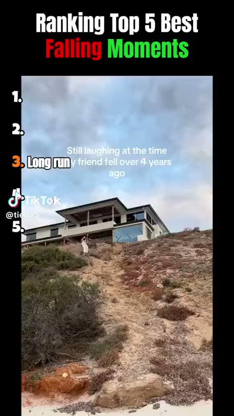
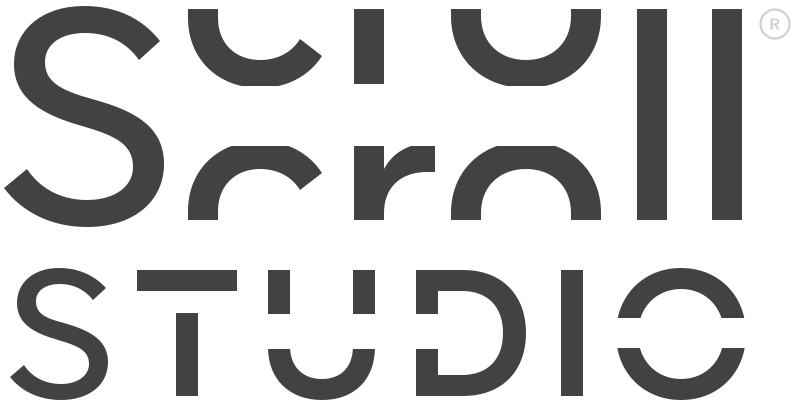

Scegli quante posizioni, carica le clip e monta la tua top in pochi secondi.

La clip 2 supera i 60 secondi.
Le clip vengono elaborate nel browser.
"Gatto contro cetriolo" verrà tolta dalla classifica.